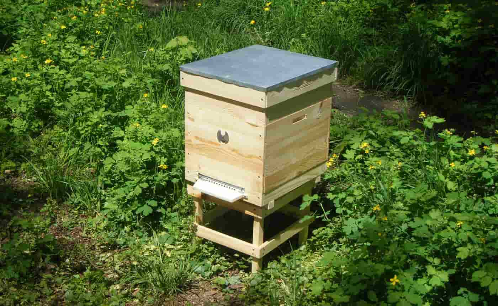
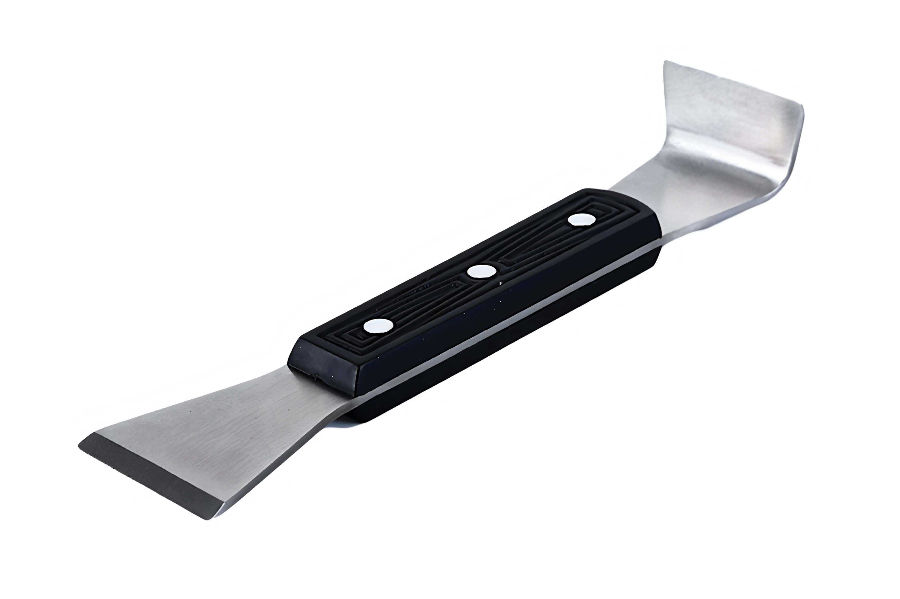
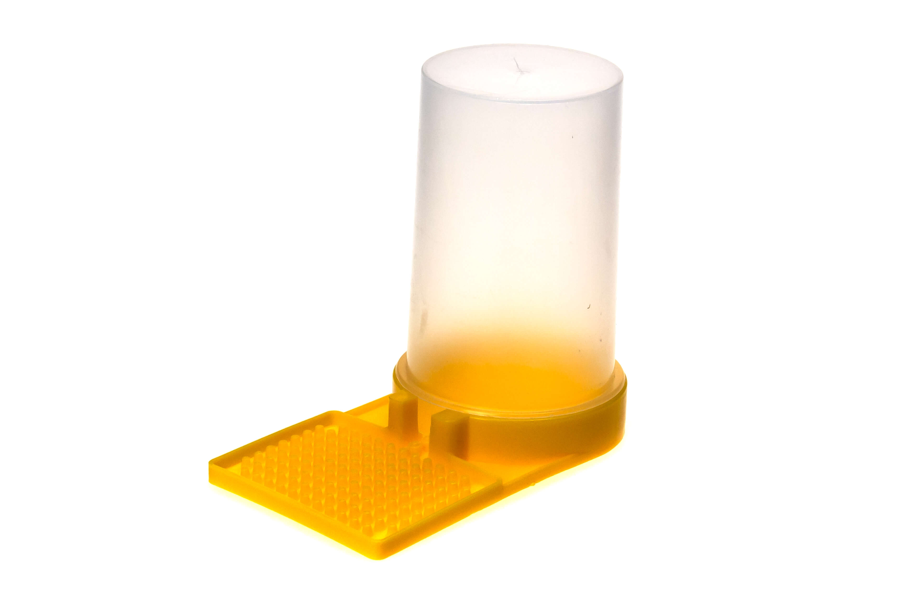
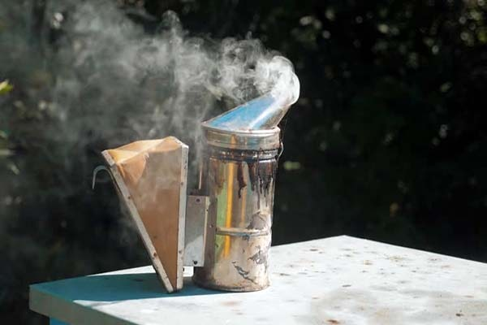
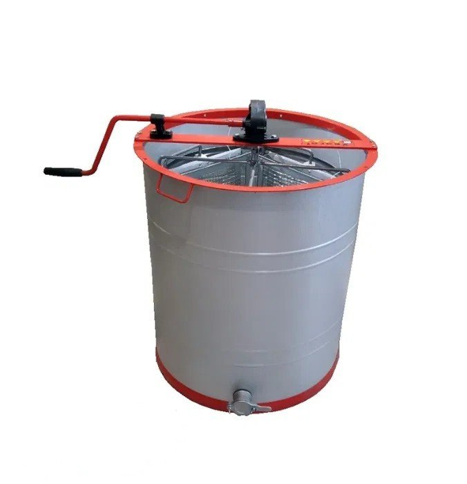

Инвентарь пчеловода
Инвентарь для пчеловодства включает в себя различные предметы и оборудование, необходимые для ухода за пчелиной популяцией и сбора пчелиных продуктов. Вот основные компоненты инвентаря для пчеловодства:
Ульи:

Ульи представляют собой дома для пчёл, где они строят соты, хранят мёд и разводят потомство. Существует несколько типов ульев, включая стандартные лежаки, рамочные ульи и топлитные ульи.
Рамки:
Рамки используются в рамочных ульях для строительства сот пчёлами и хранения мёда и пчелиного материала. Рамки могут быть изготовлены из дерева, пластика или других материалов.
Соты:
Соты являются структурными элементами ульев, в которых пчёлы хранят мёд и выращивают потомство. Они также служат для сбора и хранения пчелиного воска.
Защитная одежда:
Пчеловод использует защитную одежду, включая пчелиные костюмы, перчатки, фартуки и защитные сетки, чтобы защитить себя от укусов пчёл и укусов.
Инструменты:

К основным инструментам для пчеловодства относятся курки, шпатель для разделения сот, щётки для удаления пчёл с рамок, крючки для подвешивания рамок и другие.
Кормушки и поилки:

Кормушки используются для подачи дополнительного корма пчёлам в периоды недостатка цветения или зимней спячки. Поилки предоставляют доступ пчёлам к воде, необходимой для охлаждения улья и растворения мёда.
Дымовые аппараты:

Дымовые аппараты используются для создания дымовой завесы вокруг улья, что успокаивает пчёл и делает их менее агрессивными во время осмотра улья.
Медоотжимные машины:

Медоотжимные машины используются для извлечения мёда из сот. Они могут быть ручными или автоматическими и имеют различные размеры и емкости.
Устройства для защиты от крыс и других вредителей:
К таким устройствам относятся пчелиные ловушки для медведей, сетки для предотвращения доступа крыс и других грызунов, а также химические средства для борьбы с вредителями.
Инструменты для обработки мёда:
Это включает в себя фильтры для очистки мёда от воска и других примесей, ведра и банки для хранения мёда, мерные ложки и контейнеры для упаковки мёда.
Кроме того, инвентарь для пчеловодства может включать в себя различные аксессуары и дополнительные материалы, в зависимости от конкретных потребностей и методов работы пчеловода.